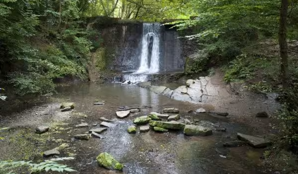
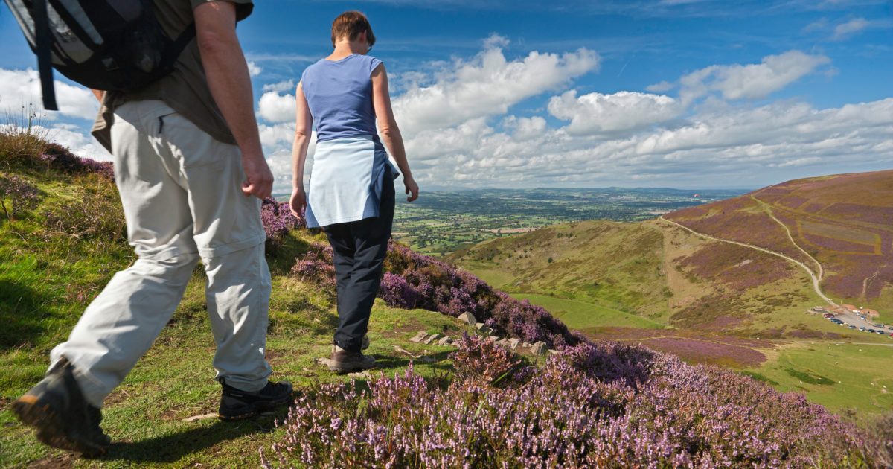

Natural Beauty
Flintshire has a spectacular coastline that stretches along the Dee estuary to Talacre Beach, where the Dee meets the Irish Sea. Away from the coast is the Clwydian Range of hills, an Area of Outstanding Natural Beauty.
The North Wales and Dee Estuary section of the Wales Coastal Path starts close to the Roman City of Chester and continues all along the FLintshire coastline.
Talacre Beach is a great place whatever the weather. There are miles of golden sand and extensive views to the north, east and west.
The Clwydian Range is formed of over 20 miles of undulating hills from the Prestatyn Hillside in the north to the Nant y Garth pass in the South.
